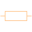
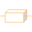
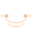
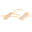

IconsIcons for FluxTubes components |
|
Package Contents
|  |
Icon for reluctance / permeance components |
|  |
Icon for cuboid |
|  |
Icon for toroid |
|
Icon for cylinder with axial flux |
|
|
Icon for cylinder with radial flux |
|
|  |
HollowCylinderCircumferentialFlux Icon for cylinder with circumferential flux |